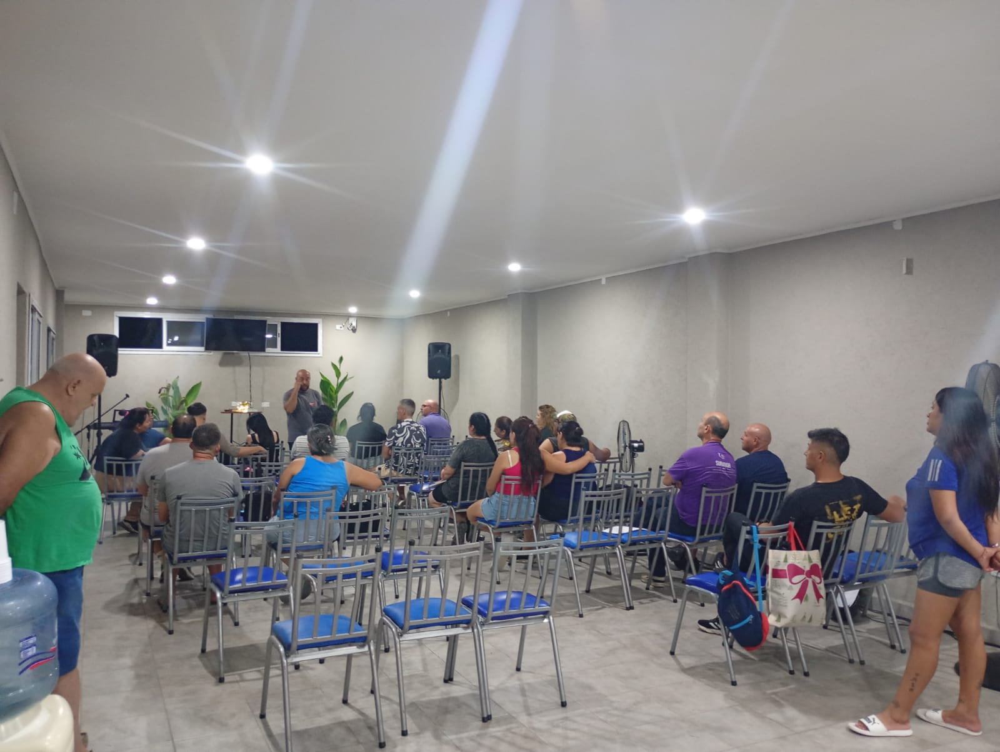
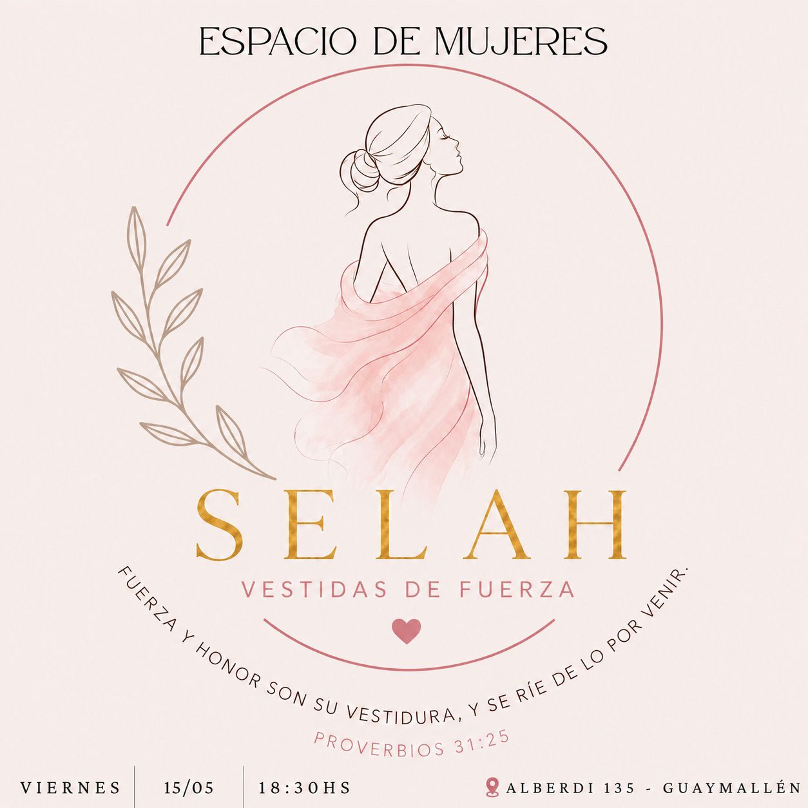

Bienvenidos a la iglesia Preparando el camino
Un lugar de fe, amor y restauración

—
—
”Para afilar el hierro, la lima; para ser mejor persona, el amigo." Proverbios 27.16 TLA
Si alguna vez viste el programa "Desafío sobre fuego" vas a saber que trabajar el metal es algo duro, de mucho esfuerzo y dedicación, paciencia y determinación. A eso, sumarle una gran capacidad para adaptarse a las situaciones y un gran talento para usar el martillo y las técnicas de forjado.
Lo que me llamó la atención hace poco, fue enterarme que los distintos tipos de metales que existen, se forjan o "ablandan" a distintas temperaturas. Si quiero unir dos metales distintos, necesito conocer la temperatura de cada metal y no sobre calentar para no quemar el metal que se forja a menor temperatura pero al mismo tiempo, forjar el que lo hace a gran temperatura.
Inmediatamente vino a mi cabeza, el versículo que puse de cabecera, en la versión TLA y según la analogía que usó Salomón, pude entender 3 cosas que quiero compartirte:
1) El metal sos vos y necesitas afilarte.
¡No hay peor cosa que un cuchillo desafilado! Necesitamos estar bien afilados para cumplir nuestro propósito en esta tierra, ser útiles y no desechados.
2) Para afilarte, necesitas otro cuchillo o metal.
Cartón lleno, Salomón nos habla de que es necesario estar afilados y encima nos dice cómo hacerlo: con mi prójimo, mi hermano, mi amigo.
El proceso de afilado, es duro, desgasta, cuesta, pero al final de cuentas, si el otro metal es firme, te aseguro que valdrá la pena afilarte.
3) Necesito forjarme a altas temperaturas y ser capaz de respetar los procesos de los demás.
Si algo es excepcional, es este punto. Es mi responsabilidad estar afilado y forjarme a altas temperaturas de compromiso, de cumplimiento de propósito, de servicio a mi Señor y a mis hermanos. Pero también debo ser respetuoso y honorable con los que tengo a mi alrededor. Saber a qué temperatura funciona mi hermano y amarlo igual, honrarlo y estar a disposición.
Te animo a que estos 3 puntos, sirvan de autoevaluación. Que mi filo bendiga a otros, no por ser violento, sino, cumpliendo mi propósito y contagiar a otros.
🙏🏼ORACIÓN: Amado Padre, qué hermoso mensaje nos dejas en tu palabra, cada punto y coma, nos habla profundamente. Queremos cumplir el propósito por el cual fuimos creados, para tu Gloria y honra amado!

Un espacio de adoración, comunión y crecimiento espiritual
Te invitamos a compartir cada semana junto a nuestra congregación, donde buscamos adorar a Dios, aprender de Su Palabra y crecer espiritualmente en comunidad.

Un camino hacia la sanidad y nueva vida
Ofrecemos un programa integral de recuperación basado en principios cristianos para personas que luchan con adicciones.

¡No podés faltar!

Emergente social: 19:30 Hs
Estudio Bíblico: 20:00 Hs

Reunión de Pre-Adolescentes: 18:30 Hs

Servicio Principal: 20:00 Hs
Juan B. Alberdi 135
Teléfono: (261) 596-0948
Email: signoreliraul42@gmail.com